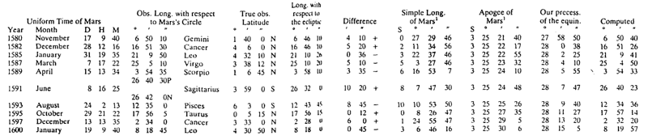

A complex table
This page has been made to help the reader make sense of the different columns of the large table of Brahe's opposition observations. This is not a complete guide to the chapter.

Parts of the table:
- Obs. Long. with respect to Mars's Circle
- This will make more sense in chapter 9. This is where Mars is, in its orbit, rather than dropped along latitude to lie on the earth's ecliptic.
- Long. with respect to the ecliptic
- This is the position on the ecliptic where you could raise a perpendicular to reach Mars at its proper latitude. See chapter 9.
- Difference
- The difference between these two longitudes. This is the subject of chapter 9.
Simple Long. of Mars- This is the mean motion of Mars.
Computed- Computed position of Mars, by the Tychonic equations. Tycho wanted this to match the longitude with respect to Mars's ecliptic.
|